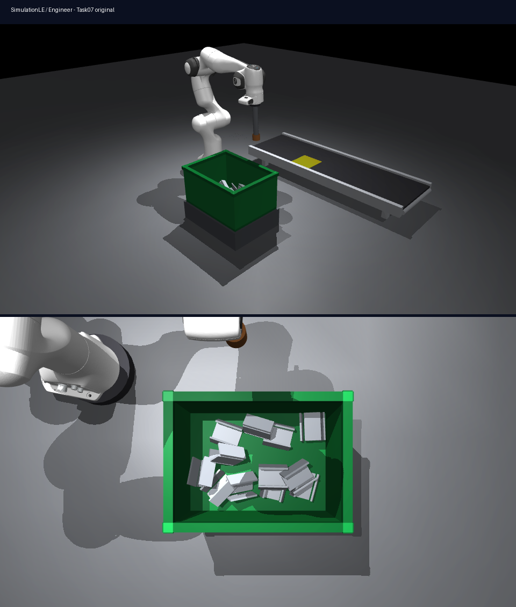
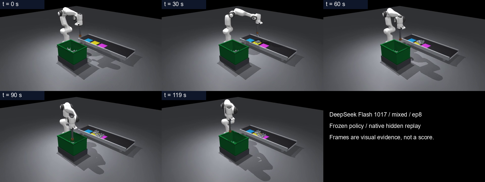

GPT-6 Luna原题 · 0.00
控制点错了，IK 没有推进。
已确认：代码查询不存在的 grip，实际控制点为 arm_grip。未检查 ID = −1；位置索引落到距接触面 0.197 m 的 arm_ft。原生诊断确认 mj_jacSite(-1) 得到零 Jacobian，IK 更新为零。
正式表现：0/112 清出，回放接近初始姿态；加载与接口 gate 仍可通过。12.66 min 主动提交后未补时修复。
视觉定位、接触抓取、多件分离与投后恢复，缺一环都清不空。
一台七轴 Panda 需要在 120 秒内，将箱中 12–16 件散乱、可能嵌套的钢制 U 形支架逐件送往输送工位。磁铁只有接触零件才能吸附，也可能一次带起多件；工位只接受已释放并稳定停留的单件。
顶视与腕部 RGB-D 为 10 Hz，提供标定与腕部力/力矩。实时物体位姿、身份和类别不提供。
输出七关节目标和磁铁指令，控制 20 Hz。规划避碰、确认负载、处理嵌套与多件抓取。
单件释放，速度低于 0.02 m/s 持续 0.5 s 才清出。双件堵站、持有、飞过都不计。

同一种钢制支架，单工位逐件上料。难点是无真值定位、接触式抓取、嵌套分离和后段恢复。
长度示意不按屏幕物理比例。三类只用于混料版；同色外观，同时改变质量，允许视觉与力觉主动辨识。
题面载入中…
评分偏重完整清箱、最后难抓的一批和节拍，并扣除安全事件。六组提交均通过加载、接口、稳定性与确定性 gate；通过 gate 并不代表完成任务。
每条柱是一轮有效开发的正式工程分；两个版本分别独立开发，分差不构成同一策略的受控消融。
每点为一个隐藏回合，横线标注中位数。8 个回合来自同一提交，不是 8 次独立 Agent 开发。
| 版本 / 模型 | 工程分 /100 | 正确清出 | 完整清空 | 实际开发 /min | gate |
|---|
每组只有一次有效开发，所有模型都提前提交。一次原题 Luna 的 API 并发中断尝试已排除；未按成绩挑选重跑。当前结果可揭示失败类型，尚不足以证明稳定排名或泛化方差。
回合编号为公开展示索引，不暴露隐藏场景种子。三个模型各验收 112 件零件。
按原生公式解释分项；舍入可能带来微小差异。“截断调整”将负分裁剪至 0。未完成回合以完整 120 s 计算评分吞吐；最后清出时刻不能当作完成时间。
这里展示实际可见的消息、工具命令与返回值，时间相对首条 Agent 事件。开发短测和模型自报验证不作为正式成绩；正式分数只取冻结后的独立验收。
展开后载入原样源码。
以下分析保留证据边界。模型没有记录完整内部状态，因此“符合某分支机制”不等于“已证明隐藏回合触发该分支”。点击回放可直接检查对应场景。
已确认：代码查询不存在的 grip，实际控制点为 arm_grip。未检查 ID = −1；位置索引落到距接触面 0.197 m 的 arm_ft。原生诊断确认 mj_jacSite(-1) 得到零 Jacobian，IK 更新为零。
正式表现：0/112 清出，回放接近初始姿态；加载与接口 gate 仍可通过。12.66 min 主动提交后未补时修复。
已确认：同样使用错误控制点，但此版通过 least_squares 数值差分求解，不能套用原题的零 Jacobian 解释。缺少三类识别，始终使用标准件工位。
正式表现：0/112 清出，5 次掉落、1 次撞箱。3.23 min 正常提前提交；回放确有移动，非接口故障导致中止。
已确认：正确控制点、6D IK、RGB-D、力觉称重与多件倾斜分离。7/8 完整清空，103/112 清出，安全处罚为零。
失败回合：第 7 回合仅清出 4/13；最后清出在 30 s，随后跑满 120 s，后 90 s 没有新增。回放可见多件负载和放回重抓；没有状态序列，无法锁定单一阈值为根因。
已确认：101/112 正确清出，6/8 完整清空，错投与其他处罚均为零。完成回合用时 90.65–117.15 s。
失败回合：第 1、6 回合分别清出 12/16、6/13，最后清出在 119.4、114.95 s，末段仍在推进。证据指向节拍和多件处理能力不足，不能把分差全部归因于分类。
已确认：87/112 清出、2/8 清空、1 次掉落。第 3 回合仅清出 6/12，最后清出在 32.6 s，未完成回合均执行满 120 s。
机制线索：代码在重复无候选或扫描停留超过 5 s 时可转入 done 持位，缺少工位残留回收。与后段停滞一致，但未记录内部状态，不能断言某个回合正是该分支触发。
已确认：69/112 正确清出，0/8 清空；第 8 回合两次错投。5/14 清出带来 2.08 分、吞吐 5 分，错投扣 10 分，最终截断至 0。
代码与回放：世界坐标力觉称重分类；候选只来自料箱，投后固定撤离，无工位回收或有效清出确认。第 8 回合 30 s 后工位出现多件堆积，后段仍有残留；两次错投对应哪件及阈值机制尚不确定。

组织方在提交冻结后发现：DeepSeek 混料代码中 plan_abort() 后立即调用 execute() 可将 abort 覆盖为 settle，磁铁仍为 128；两短件合重约 4.10 N，可被称重阈值接收为约 3.72 N 的长件原型。
这些为静态或合成机制证据，不计工程评分，没有修改或重跑提交，也不能证明隐藏回合实际触发。该提交正式损伤事件为 0。
每模型每版本一次有效独立开发，可提前提交。reset、仿真和工具调用不限；同一公开题面、资源和冻结流程。三模型均由 Harbor 0.21.0 + Codex CLI 0.118.0 驱动，请求推理强度 high，供应商实际行为可能不同。
提交或到时停止开发容器全部进程，冻结产物。2×20 s smoke 后运行 8×120 s。每回合策略累计计算等待 360 s，单次 act 挂起 30 s；仿真和渲染不计该等待。
非线性清出、吞吐、完整清空与速度奖励，扣掉落、损伤和撞箱；混料加错投处罚。四 gate 全通过。独立验收外层 10800 s，上述验收耗时不占开发 2 h。
原题源于 RLE-Bench Task07 · bin-clearing ↗，固定 commit c6bf572…e433d；269 个上游源码文件已核对哈希。保留原生物理规则、观测接口与验收流程，本轮将上游 4 h 开发预算统一为 2 h，不能视为全部论文实验条件的逐项复现。
mixed-v1 是 SimulationLE 独立改编：新增三类同色零件、三工位映射、质量变化、错投记录与处罚。页面成绩均来自本项目本轮测试，不是论文已报告的模型分数。两个版本分别独立开发，不能将分差解释成同一策略的消融。
复现检查：上游 73 passed / 1 skipped，混料专项 9 passed；超时与提前提交冻结检查通过。参考诊断不作为模型分数或满分可解性证明。当前 Linux CPU 环境复用既有镜像依赖，尚未在全新机器验收一键安装。
48 段原生 MP4 均可在回放区选择。公开包包含六份冻结源码、正式验收报告和筛选后的可见工具轨迹；不包含认证文件、系统提示或隐藏种子。
公开 policy.py 需要固定版本场景资产、专业依赖和对应 harness。结果包用于核查，不是独立可执行环境。RLE-Bench 与 Panda 资产许可随文件提供。